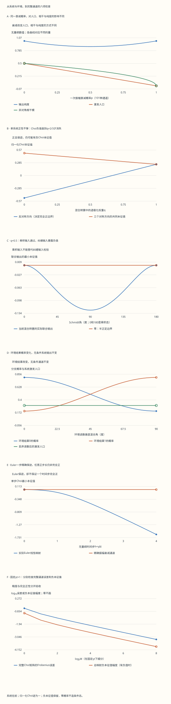

本页目录
基础衔接 05 · Kraus 与 Choi：让噪声模型接受环境与纠缠的检验
先修：密度矩阵与退相干、Qubit 与纠缠。本讲限于有限维系统，单比特基底为 \((|0\rangle,|1\rangle)\)。联合系统始终把被操作的系统放在前面，环境或参考放在后面，顺序为 \((00,01,10,11)\)。目标：从真实矩阵作用重建一个通道，并找到“单系统看起来合法”仍不够的反例。
1. 检验一个态，与检验一个操作，是两件事
密度矩阵要求 \(\rho\geq0\)、\(\operatorname{Tr}\rho=1\)。如果只把几个输入送入一个拟议的“噪声函数”，发现每次输出都有迹一，还不能把它称为量子通道：迹只检查概率之和，正性才禁止负概率，而且这个系统可能早已和外部参考纠缠。
一个线性映射 \(\Phi\) 若把所有半正定矩阵送到半正定矩阵，就称为正映射。若对每个有限维参考系统 \(R\)，\(\Phi\otimes\mathrm{id}_R\) 都保持正性，就称为完全正。完全正且保持迹的映射简称 CPTP，它描述不选择特定测量结果的量子操作。
这里的操作必须能独立施加在系统上，对任意允许输入都成立。若一开始系统与环境有未知关联，约化演化的输入域与初态制备方式要另外说明。本讲环境初态固定且与系统无关联。
为了不只测试实数叠加，实验使用
\(r\) 是 Bloch 半径；\(r=0\) 是最大混合态，\(r=1\) 才是纯态。相位 \(\varphi\) 必须保留，才能检查转置、共轭和张量指标有没有放错。
2. 一次衰减，从系统与环境的幺正作用开始
设环境为另一比特，初态是 \(|0_E\rangle\)。令 \(p\in[0,1]\) 表示这一次作用中激发衰减的概率。记 \(a=\sqrt{1-p}\)、\(b=\sqrt p\)，选择明确的幺正矩阵
中间的两列正交且范数为一，其他两列固定，因此 \(U^\dagger U=I_4\)。对环境初态为零的输入，只用到第一和第三列，得到等距映射 \(V\)：
丢弃环境后，系统输出为 \(\operatorname{Tr}_E[V\rho V^\dagger]\)。按环境基底展开偏迹，定义 \(K_j=(I\otimes\langle j_E|)V\)，便得到
这不是凭空猜出一个求和：每一项来自一个环境结果。\(\sum_jK_j^\dagger K_j=I\) 与迹的循环性给出迹保持。对任意联合正态 \(\rho_{SR}\) 和向量 \(v\)，有 \(v^\dagger(\Phi_p\otimes\mathrm{id})(\rho_{SR})v=\sum_jw_j^\dagger\rho_{SR}w_j\geq0\)，其中 \(w_j=(K_j^\dagger\otimes I)v\)。因此 Kraus 形式证明了所有辅助系统上的正性。
实验同时计算 \(U(\rho\otimes|0\rangle\langle0|)U^\dagger\)、两个偏迹、Kraus 和以及后面的 Choi 重建。不同表示必须给出同一个系统输出。
3. 人口、相干、纯度与选择结果
写 \(\rho=\begin{pmatrix}1-b_0&c\\\bar c&b_0\end{pmatrix}\)，其中 \(|c|^2\leq b_0(1-b_0)\)。直接乘矩阵可得
激发人口乘 \(1-p\)，相干乘平方根。纯输入满足 \(|c|^2=b_0(1-b_0)\)，这时输出行列式是 \(p(1-p)b_0^2\)，纯度为 \(1-2p(1-p)b_0^2\)。对于混合输入，不应继续套用这个纯态专用式；实验直接计算 \(\operatorname{Tr}\rho_{\rm out}^2\)。
在 \(p=1\) 时，任意输入都变成系统纯基态。原来系统的信息没有凭空消失：由上节 \(U\) 可见，输入纯态 \(|\psi\rangle|0_E\rangle\) 被送到 \(|0\rangle|\psi_E\rangle\)；线性推广后，混合输入也转移到环境。因此“有耗散”不等于“最后最大混合”。
如果读取环境结果 \(j\)，未归一化分支为 \(R_j=K_j\rho K_j^\dagger\)，结果概率为 \(P_j=\operatorname{Tr}R_j\)。只有 \(P_j>0\) 时才定义条件态 \(R_j/P_j\)。概率零的结果不会发生，不能通过加一个很小的分母替它制造条件态。把所有分支加回去才是无条件 CPTP 通道；归一化的条件态公式本身一般不是线性的。
4. Kraus 算符不唯一，环境读数却有意义
设 \(W\) 是环境指标上的幺正矩阵，令 \(K'_j=\sum_kW_{jk}K_k\)。由于 \(\sum_jW_{jk}\overline{W_{j\ell}}=\delta_{k\ell}\)，有 \(\sum_jK'_j\rho K_j'^\dagger=\sum_kK_k\rho K_k^\dagger\)。
实验选择一个带复相位的旋转
丢弃环境结果时，这只是同一个通道的另一组 Kraus 表示。如果真的在不同环境基底读数，分支概率与结果所携带的信息却可以改变。请比较两条结果概率曲线和保持不变的系统输出；不要从“每个算符改变了”直接推断“无条件操作改变了”。
账本对原始基底列出非零概率下的条件态；对旋转后的基底保留全部未归一化分支与概率，避免让几乎不发生的结果的归一化放大舍入误差。两组分支的总和都必须重建原来的系统输出。
5. Choi 矩阵怎样保存整个线性映射
令 \(|\Omega\rangle=(|00\rangle+|11\rangle)/\sqrt2\)，固定输出系统 \(S\) 在前、参考 \(R\) 在后。本讲使用归一化定义
Choi 不只是“一份纠缠输出”：它的各块保存了线性基底 \(E_{ij}\) 的像。所以对任意二阶矩阵 \(A\)，包括不是密度矩阵的非 Hermitian 矩阵，都有
转置和系数二都不能漏。验证方法是写 \(A=\sum_{ij}A_{ij}E_{ij}\)，利用 \(\operatorname{Tr}(E_{ij}A^{\mathsf T})=A_{ij}\) 逐项还原。实验对四个 \(E_{ij}\) 分别核对直接作用与 Choi 重建，而不只测试几组实密度矩阵。
有限维 Choi 判据是：完全正当且仅当 \(J_\Phi\geq0\)，保持迹当且仅当 \(\operatorname{Tr}_S J_\Phi=I_R/2\)。必要性来自对 Bell 输入施加完全正映射。充分性可直接构造：若 \(J=\sum_\ell\lambda_\ell|v_\ell\rangle\langle v_\ell|\geq0\)，按系统—参考顺序把 \(v_\ell\) 的四个系数排成二阶矩阵 \(A_\ell\)，取 \(K_\ell=\sqrt{2\lambda_\ell}A_\ell\)。这组 Kraus 的 Choi 就是原来的 \(J\)，从而重建同一映射；第二节的证明立即推广到任意参考系统。
若用未归一化向量 \(|00\rangle+|11\rangle\) 定义 Choi，通道的 Choi 迹是二，重建与 Kraus 提取公式相应不带这里的二。下面的计算始终使用归一化版本。
振幅衰减给出
角上的二阶块是秩一，故其非零本征值就是迹 \((2-p)/2\)；另一个非零值来自 \(p/2\)。对输出系统求偏迹得到 \(I/2\)。实验实际从这份谱分解重建 Kraus，并再次作用于输入。
6. 转置为何能骗过所有单系统测试
指定基底下的转置 \(T(A)=A^{\mathsf T}\) 保持迹；对 Hermitian 半正定 \(A\)，转置也保留非负本征值。因此它通过所有单系统正性测试，而不仅是几个选定例子。
但 \(J_T=F/2\)，其中交换算符满足 \(F|a,b\rangle=|b,a\rangle\)。三个对称方向的本征值为 \(1/2\)，反对称态 \(|\psi^-\rangle=(|01\rangle-|10\rangle)/\sqrt2\) 的期望则是 \(-1/2\)。若把它当作联合输出密度矩阵，测量这个投影就会得到负概率。故转置不是完全正映射，也不是对任意未知态都可实现的确定性“复共轭门”。

加入完全退极化 \(D(A)=\operatorname{Tr}(A)I/2\)，定义数学映射 \(\Phi_q=(1-q)T+qD\)、\(0\leq q\leq1\)。它始终正且保迹，但
完全正区域恰好是 \(q\geq2/3\)。实验保留负值，不把它们截断为零。在合法区域，还可以给出真正的实现：以概率 \(w_I=w_X=w_Z=(2-q)/4\)、\(w_Y=(3q-2)/4\) 随机施加 \(I,X,Y,Z\)。由 Pauli 共轭对 Bloch 向量各分量的作用，可直接验证这等于 \(\Phi_q\)；对应 Kraus 是 \(\sqrt{w_\alpha}\sigma_\alpha\)。
这不是“先做非法转置，再加噪声”。合法区域使用自己的 Pauli 操作实现；非法区域的 Kraus 实现明确标为不适用。谱分解提取的 Kraus 与 Pauli 实现也须给出同一个 Choi。
在完全正边界，联合输出的理论零本征值可能在浮点计算中显示为约 \(10^{-17}\) 的负数。这时应结合解析边界、完整矩阵和数值误差判断，不能只看一个浮点数的符号。实验保留这些原始值；这种舍入现象与上面转置的负半、练习中的负0.05有明确的数量级区别，也不构成把所有负值截零的理由。
7. 参考系统带来什么额外约束
实验把参考输入改为 \(|\Psi\rangle=\cos(a/2)|00\rangle+e^{i\phi}\sin(a/2)|11\rangle\)。令 \(b_0=\sin^2(a/2)\)。对系统施加 \(\Phi_q\) 后，联合候选输出可以直接写成 \((1-q)\rho_{SR}^{T_S}+q(I_S/2)\otimes\rho_R\)，所以参考边缘态保持不变；这并不保证联合候选态为正。
中间的 \(01/10\) 二阶块的最小本征值是
若 \(0<b_0<1\)，这个块的行列式为 \(b_0(1-b_0)[q^2/4-(1-q)^2]\)；当 \(q<2/3\) 时为负。任意非零纠缠在这个精确态族中都能暴露问题，Bell 选择给出最强的负值。若 \(a=0\) 或 \(180^\circ\)，输入是乘积态，联合输出仍可半正定；只做这种测试会漏掉不完全正性。
这里给出的代数条件覆盖整个态族，不是从181个绘图采样点归纳出的定理。Choi 判据则进一步把结论推广到任意辅助系统，不依赖这一族是否被全部扫描。
8. Lindblad 的精确有限步，与 Euler 近似
若另行建立时间模型 \(p(t)=1-e^{-\gamma t}\)、\(\gamma\geq0\)，振幅衰减满足 \(1-p(t+s)=(1-p(t))(1-p(s))\)。对小时间展开 Kraus 和，得到
人口按 \(e^{-\gamma t}\)、相干按 \(e^{-\gamma t/2}\) 衰减。一个合法的有限步通道本身并不证明这个时间齐次半群模型；这里是先明确选定模型，再验证它的复合律。
令 \(h=\gamma\Delta t\)。Euler 一步 \(\mathcal E_h=\mathrm{id}+h\mathcal L\) 把激发人口乘 \(1-h\)、相干乘 \(1-h/2\)。它精确保迹，却有归一化 Choi
\(00/11\) 主块的行列式是 \(-h^2/16\)。因此任意 \(h>0\) 的 Euler 一步都不是完全正映射，即使其人口看起来还在合理范围。小步长改善近似精度，并不自动把每一步变成物理通道。
在固定 \(x=\gamma t\) 下，实验实际构造超算符矩阵 \(I+(x/M)\mathcal L\) 并求其 \(M\) 次幂，与独立矩阵指数 \(e^{x\mathcal L}\) 对照。比较量是完整 Choi 的 Frobenius 范数差，同时保留单步与总映射的全部本征值。有些不合法的步相乘后可能碰巧得到合法总映射，因此不能把“每步不完全正”偷换成“任意最终复合都不完全正”。两者都需要各自检查。
本讲的 \(p\) 控件表示一次指定通道；\(x=\gamma t\) 控件用于本节另行指定的半群。它们可以独立改变，不要把默认的两个数当作同一次过程的重复参数。
9. 实验：先选择待验证的命题
先用默认复数输入比较 Kraus 和、环境偏迹与 Choi 重建；再选“完全衰减”，检查系统与环境的输出。换环境基底时，记录结果概率怎样变化，并确认丢弃读数后的系统输出与 Choi 不变。
转到混合转置，比较 \(q=0.5\)、\(q=2/3\) 和合法 Pauli 区域。随后保持 \(q=0.5\)，把辅助输入从 Bell 态变为乘积态，观察为什么单次通过不构成通道证明。最后固定 \(\gamma t\)，细化 Euler 步数，同时检查误差与最小本征值。
默认 \(p=0.4,q=0.5,r=1,\vartheta=90^\circ,\varphi=\pi/4\)，参考输入取等幅纠缠；另行指定 \(\gamma t=1,M=16\)。禁用脚本仍能阅读和下载完整固定记录。
无脚本对照：六份固定记录保留系统、环境、Choi与时间近似的完整复矩阵。结果概率零时没有条件态；混合转置的负本征值保持原值。
| 预设 | p | 系统纯度 | 环境纯度 | 原始结果概率 | q | 完全正 | Choi最小本征值 | 联合输出最小本征值 | Euler完整Choi误差 |
|---|---|---|---|---|---|---|---|---|---|
| default | 0.4 | 0.88 | 0.88 | [0.8, 0.2] | 0.5 | 否 | -0.125 | -0.125 | 0.00901668442 |
| reset | 1 | 1 | 1 | [0.5, 0.5] | 0.5 | 否 | -0.125 | -0.125 | 0.00901668442 |
| zero | 0.4 | 1 | 1 | [1, 0] | 0.5 | 否 | -0.125 | -0.125 | 0.00901668442 |
| boundary | 0.4 | 0.88 | 0.88 | [0.8, 0.2] | 0.666666667 | 是 | 0 | -2.77555756e-17 | 0.00901668442 |
| pauli | 0.4 | 0.88 | 0.88 | [0.8, 0.2] | 0.8 | 是 | 0.1 | 0.1 | 0.00901668442 |
| coarse | 0.4 | 0.88 | 0.88 | [0.8, 0.2] | 0.5 | 否 | -0.125 | -0.125 | 0.843896169 |
下载六份完整记录，含幺正扩张、偏迹、四个矩阵单位的重建、所有扫描与实际Euler超算符幂。
六幅图展示的是明确给出的有限参数扫描。各曲线的数值可以从完整复矩阵重算；完全正边界与 Euler 主子式的结论来自正文的代数推导。

10. 迁移题：把条件和矩阵一起写出来
练习 1 · p=1/2，激发态与等幅纯叠加态的输出纯度分别是多少？
纯激发态 \(b_0=1\)，输出人口 \(1/2\)、相干零、纯度 \(1/2\)。等幅纯叠加态 \(b_0=1/2\)，输出人口 \(1/4\)、相干模 \(1/(2\sqrt2)\)、纯度 \(7/8\)。一个衰减概率并不单独决定输出纯度，输入态也很重要。
练习 2 · 为什么p=1可以把系统变纯，而不丢失全局信息？
由指定的幺正作用，\(\alpha|00\rangle+\beta|10\rangle\) 被送到 \(|0\rangle(\alpha|0_E\rangle+\beta|1_E\rangle)\)。系统已重置，输入信息转到环境；混合输入由线性推广同样成立。只观察系统偏迹不能代表观察了整个封闭系统。
练习 3 · 原始环境结果的概率为零时，条件态是什么？
没有定义。正矩阵 \(R_j\) 若迹为零，就必须是零矩阵，归一化会遇到 \(0/0\)。例如基态输入的跳跃结果不发生。实验保留零概率和未归一化零矩阵，并把条件态标为不适用；不会加小分母造出一个结果。
练习 4 · 归一化Choi重建为何同时需要转置和系数二？
将 \(J=\frac12\sum_{ij}\Phi(E_{ij})\otimes E_{ij}\) 代入，\(\operatorname{Tr}(E_{ij}A^{\mathsf T})=A_{ij}\) 提取正确矩阵元，前面的二抵消 Bell 态归一化产生的 \(1/2\)。若漏转置，就一般得到 \(\Phi(A^{\mathsf T})\)；若漏二，输出迹也会少一半。复数非对角输入可以直接暴露这些错误。
练习 5 · q=0.6为何不是通道？把负本征值截零能保留原映射吗？
反对称 Choi 本征值为 \((3q-2)/4=-0.05\)，而其他三个为 \(0.35\)；总迹仍是一。负值否定完全正性。截断本征值会改变 Choi，也就改变了线性映射，并且还要重新检验输出偏迹条件。不能把修补后的对象继续称为原模型。
练习 6 · q=2/3的合法操作如何实现？需要先做转置吗？
不需要。此时 \(w_I=w_X=w_Z=1/3\)、\(w_Y=0\)，随机等概率施加 \(I,X,Z\) 即可。把 Pauli 共轭对 Bloch 向量的三个分量分别相加，得到 \((x,-y,z)/3\)，正是 \(\Phi_{2/3}\)。这是合法 Kraus 实现，并没有把非法转置当成实际步骤。
练习 7 · 任意小的正Euler步长，为什么仍可能产生不合法的联合输出？
归一化 Choi 的 \(00/11\) 主块行列式为 \([1-h-(1-h/2)^2]/4=-h^2/16<0\)，所以有负本征值。迹保持与人口近似正确都没有修复这一点。减小 \(h\) 可以使错误变小，却不把严格负数变为数学上的半正定。
练习 8 · 两个非法Euler步相乘，最终映射一定非法吗？
不一定。取每步 \(h=2\)，一步把激发人口参数 \(b\) 变为 \(-b\)，相干变为零，显然不是通道。两步后人口恢复为 \(b\)、相干仍为零，得到计算基底退相干通道，最终 Choi 半正定。这不使中间步骤变得可实现，也不说明它逼近正确的 \(\gamma t=4\) 衰减；应分别检查每步合法性、总映射合法性与精度。
速查与下一步
Kraus 和证明完全正；\(\sum_jK_j^\dagger K_j=I\) 保证迹保持。归一化 Choi 要求 \(J\geq0\)、\(\operatorname{Tr}_S J=I_R/2\)，并通过带转置及系数二的公式重建操作。单系统正性、完全正性、测量条件态与时间齐次半群是不同要求。继续驱动开放系统或容错量子计算，把噪声的相关性、时间模型和数据不确定度分别加入检验。
原始资料：Watrous，The Theory of Quantum Information，第2章，Choi表示、定理2.22及推论2.23。已核读原PDF印刷页78、82及证明文本。原文的 Choi 未归一化，本讲明确转换系数；具体衰减扩张、混合转置、Pauli实现和Euler反例均由文中矩阵独立推导。原始书稿不随课程重新分发。核查：2026-09-13。